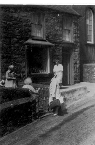

Alpha Shop
This was Ann Williams’ old shop, later ran by M.J. Williams, her son, and after him, his nephew George Williams. Ann Williams ran a shop at Tŷ Croes before moving to Alpha Shop, which used to sell pottery and utensils. They used to weigh looseleaf tea in conical paper bags. The storeroom, opposite the shop, stored paraffin, vinegar, and various goods. Carpets and large goods were stored in the storeroom in later years. In 1891, Catherine Davies ran a grocer’s shop here.
Census Facts:
Alpha Shop, Tydfil Williams, the shopkeeper by the door